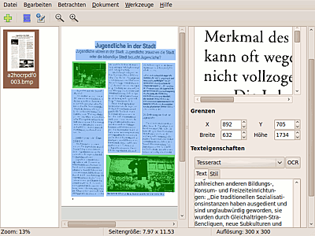

OCRFeeder
Dieser Artikel wurde für die folgenden Ubuntu-Versionen getestet:
Ubuntu 16.04 Xenial Xerus
Zum Verständnis dieses Artikels sind folgende Seiten hilfreich:
OCRFeeder  ist eine in Python geschriebene Anwendung zur Texterkennung und Layout-Analyse, mit der als Bilddatei vorliegende Text-Dokumente weiterverarbeitet, und auch mit Bildern versehen und angepasstem Layout/Schriftbild abgespeichert werden können. Die Vorlagen können mit unpaper vorbereitet werden, als OCR-Engines können verschieden Programme zum Einsatz kommen (bereits vorgesehen sind Ocrad, GOCR, tesseract-ocr und cuneiform). Die Ausgabe kann im .odt-Format (OpenOffice.org/LibreOffice), oder als HTML-Dokument erfolgen. Das Programm, das vom Entwickler als Teil seiner Master-Arbeit entworfen wurde, steht noch am Anfang seiner Entwicklung.
ist eine in Python geschriebene Anwendung zur Texterkennung und Layout-Analyse, mit der als Bilddatei vorliegende Text-Dokumente weiterverarbeitet, und auch mit Bildern versehen und angepasstem Layout/Schriftbild abgespeichert werden können. Die Vorlagen können mit unpaper vorbereitet werden, als OCR-Engines können verschieden Programme zum Einsatz kommen (bereits vorgesehen sind Ocrad, GOCR, tesseract-ocr und cuneiform). Die Ausgabe kann im .odt-Format (OpenOffice.org/LibreOffice), oder als HTML-Dokument erfolgen. Das Programm, das vom Entwickler als Teil seiner Master-Arbeit entworfen wurde, steht noch am Anfang seiner Entwicklung.
Installation¶
OCRFeeder liegt in den Paketquellen vor und kann mit Hilfe des folgenden Pakets installiert[1] werden:
ocrfeeder (universe)
 mit apturl
mit apturl
Paketliste zum Kopieren:
sudo apt-get install ocrfeeder
sudo aptitude install ocrfeeder
Nach erfolgreicher Installation kann das Programm direkt gestartet[2] werden, z.B. unter Unity durch die Eingabe von "Ocrfeeder" in die Suchmaske der Dash.
Konfiguration¶
Zunächst müssen die Angaben für die Einstellungen und die verwendeten Programme vorgenommen werden. Im Reiter "Bearbeiten -> Einstellungen" können dazu Angaben gemacht werden, in "Allgemein" der Ort für die Temporärdateien, und die Fenstergröße (bei "Personalisiert" lassen sich Werte von 1 bis 1000 angeben - ein Änderung zeigt allerdings keinerlei Auswirkungen). Unter "Erscheinungsbild" lassen sich die (Füll)-Farben der Bild-/Textelemente festlegen. Unter "Werkzeuge" kann der Pfad zu unpaper festgelegt, sowie die bevorzugte OCR-Anwendung eingestellt werden.
Außerdem können im Hauptfenster im Reiter "Werkzeuge" die Optionen zu den verwendeten "OCR-Anwendung" erstellt werden. Mit der Schaltfläche "Erkennen" lassen sich installierte OCR-Engines automatisch eintragen (ocrad, GOCR, Tesseract und cuneiform sind intern vorgesehen). Andere lassen sich über "Hinzufügen" angeben. Die Angaben zu den Bildformaten sind dabei eher nebensächlich; für tesseract-ocr muss ggf. noch die richtige Sprache eingestellt werden, der Eintrag bei "Argumente für Anwendung" für die Erkennung von deutschsprachigen Texten sieht so aus:
$IMAGE $FILE -l deu ; cat $FILE.txt
Hier lassen sich auch die Angaben für Cuneiform-Linux spezifizieren; als Argument wird beispielsweise
-l ger -f text -o $FILE $IMAGE >/dev/null; cat $FILE; rm $FILE
für einen deutschen Text, im Ausgabeformat "Nur-Text" verwendet, smarttext ist zur Ausgabe im Zeilenumbruch auch möglich - die theoretisch verwendbaren HTML/RTF-Formate sind für diese Anwendung allerdings nicht sinnvoll. Falls eine Fehlermeldung bei der Einrichtung erscheint, muss ggf. die Pfadangabe zum jeweiligen Engine angepasst werden.

Benutzung¶
OCRFeeder kann - bis auf wenige Ausnahmen - alle gängigen Bildformate verarbeiten. Um Bilder zu laden, wird die "Plus"-Schaltfläche verwendet, oder im Reiter "Datei" "Bild hinzufügen" gewählt, dort lassen sich auch ganze Ordner auf einmal importieren. Die Bilder erscheinen als Miniaturen in der Seitenleiste des Programmfensters. Fälschlich geladene Bilder lassen sich mit " -> Löschen" auf die Miniatur (oder über "Bearbeiten -> Seite entfernen") wieder entfernen, die Miniaturen können mit gedrückter
-> Löschen" auf die Miniatur (oder über "Bearbeiten -> Seite entfernen") wieder entfernen, die Miniaturen können mit gedrückter  und Ziehen der Bilder in die gewünschte Reihenfolge gebracht werden. Ab Version 0.7.5 ist auch ein Direkt-Import von einem Sane-fähigen Scanner möglich, allerdings ohne jede direkte Einstellmöglichkeit an Scangröße, Auflösung oder Qualität.
und Ziehen der Bilder in die gewünschte Reihenfolge gebracht werden. Ab Version 0.7.5 ist auch ein Direkt-Import von einem Sane-fähigen Scanner möglich, allerdings ohne jede direkte Einstellmöglichkeit an Scangröße, Auflösung oder Qualität.
Der Eintrag "Öffnen" bezieht sich auf schon bestehende OCRFeeder-Projekte (*.ocrf), die dann zur Weiterbearbeitung geladen werden. Es können auch bereits bestehende Projekt angehängt werden.
Mit OCRFeeder lassen sich auch PDF-Dateien verarbeiten, allerdings treten beim Import teilweise noch Fehler auf; Dateinamen mit Leerstellen werden momentan nicht akzeptiert, aber auch ansonsten ist diese Funktion noch fehleranfällig. Der Import kann etwas längerer Zeit in Anspruch nehmen, und die Oberfläche ist während der Zeit nicht bedienbar. Die Dateien werden in ein .jpg-Format konvertiert, und die ursprünglichen Namen werden nicht angezeigt, sondern stattdessen "Temporär"-Namen verwendet.
unpaper¶
Die Verwendung von unpaper ist vor allem dann sinnvoll, wenn Vorlagen mit schlechter Qualität erfasst, oder z.B. Vorlagen mit schwarzen Seitenränder oder schief gescannte Bücherseiten automatisch in einen verarbeitbaren Zustand gebracht werden sollen. Unter dem Reiter "Werkzeuge" im Hauptfenster lassen sich spezielle Angaben zu unpaper machen.
Standardmäßig ist der "Schwarzfilter" eingeschaltet; er sorgt dafür, dass große schwärze Flächen in der Vorlage (wie sie z.B. beim Fotokopieren von Buchseiten an den Ränder entstehen können) herausgefiltert werden. Vorsicht z.B. bei extra großen fetten Schriften, Balkendiagrammen o.ä. Bildelementen!
Der "Entstörfilter" sorgt dafür, dass einzelne kleine Pixelansammlungen (Staub etc.) entfernt werden. Gerade bei Vorlagen mit niedriger Auflösung muss hier ggf. der Intensitäts-Wert verändert werden, damit nicht reguläre Zeichen ("." etc.) entfernt werden.
Mit dem "Graufilter" können Bereiche entfernt werden, die keine relevanten Informationen beinhalten (grauer Hintergrund bei "vergilbten" Vorlagen o.ä.). Vorsicht ist allerdings geboten, wenn farbige Scans verarbeitet werden sollen (helle Bildpunkte könnten als "grau" angesehen werden) oder wenn auch Bilder in der Vorlage vorhanden sind. Dann empfiehlt es sich, den Filter ganz zu deaktivieren.
unpaper liefert eine große Vielfalt weiterer Möglichkeiten, (z.B. "schiefe" Vorlagen automatisch gerade zu ziehen), die bei den "Extra-Optionen" verwendet werden können. Nähere Hinweise dazu finden sich in der manpage zu unpaper.
Mit der Vorschau-Funktion können die gewählten Einstellungen dann überprüft werden. Wenn das Ergebnis zufriedenstellend ist, kann es mit der Auswahl "OK" bestätigt werden; im Hauptfenster erscheint dann die "bereinigte" Version der Vorlage zur Weiterverarbeitung.
Texterkennung¶
Die eigentliche Texterkennung kann automatisch erfolgen (Schaltfläche "Automatische Detektion und Erkennung" oder Reiter "Dokument -> Dokument erkennen"), das funktioniert bei Vorlagen mit relativ großen Abständen zwischen verschiedenen Elementen (Spalten, Bildern, Überschriften etc.) recht gut. Die Bereiche werden mit der als Vorgabe gewählten OCR-Anwendung erkannt, Bereiche, die eindeutig als Nicht-Text erkannt wurden, erscheinen grün unterlegt.
Die einzelnen Bereiche können alternativ auch per gedrückter ,  oder aufgezogen werden. Das ist besonders bei Vorlagen in Spalten oder bei Bildern im Text sinnvoll. Um eine dem Original entsprechende Formatierung zu erreichen, sollte man in den zu erkennenden Bereichen auf einheitliche Textgröße achten! Die einmal festgelegte Bereichsgröße lässt sich nach dem Aufziehen nicht mehr mit der Maus korrigieren, allerdings als Ganzes mit gedrückter Maustaste verschieben. Um im Gesamtvorschaufenster eine Größenkorrektur zu erreichen, muss ein neuer Bereich, der den alten zumindest teilweise überlappt, erstellt werden. Daraus folgt auch, dass zunächst keine Überlappung von Bereichen möglich ist. Im rechten Fensterbereich erscheint dann oben der momentan gewählte Teil stark vergrößert als Detailansicht ("Clip"); darüber kann dann festgelegt werden, ob es sich um einen Text oder ein Bild handelt.
oder aufgezogen werden. Das ist besonders bei Vorlagen in Spalten oder bei Bildern im Text sinnvoll. Um eine dem Original entsprechende Formatierung zu erreichen, sollte man in den zu erkennenden Bereichen auf einheitliche Textgröße achten! Die einmal festgelegte Bereichsgröße lässt sich nach dem Aufziehen nicht mehr mit der Maus korrigieren, allerdings als Ganzes mit gedrückter Maustaste verschieben. Um im Gesamtvorschaufenster eine Größenkorrektur zu erreichen, muss ein neuer Bereich, der den alten zumindest teilweise überlappt, erstellt werden. Daraus folgt auch, dass zunächst keine Überlappung von Bereichen möglich ist. Im rechten Fensterbereich erscheint dann oben der momentan gewählte Teil stark vergrößert als Detailansicht ("Clip"); darüber kann dann festgelegt werden, ob es sich um einen Text oder ein Bild handelt.
Darunter lassen sich unter dem Punkt "Grenzen" die Werte für die Bereiche genauer festlegen. Mit dem X-Wert kann der gewählte Bereich gesamt in der Horizontale verschoben werden, der Y-Wert regelt das vertikale Verschieben nach oben oder unten. Die Werte bei "Breite" bzw. "Höhe" verändern die Ausmaße. Die Veränderungen sind direkt sowohl im Detail- als auch im Gesamtauswahlfenster zu sehen.
Unterhalb ("Texteigenschaften") wird dann mit der "OCR"-Schaltfläche die Texterkennung gestartet; es ist auch möglich, für verschiedene Bereiche unterschiedliche OCR-Engines zu verwenden (Dropdownmenü mit den in den Einstellungen vergebenen Namen). Der daraufhin erkannte Text wird unten angezeigt. Neuerkennung mit anderem Programm ist möglich, wenn das Ergebnis nicht überzeugen sollte.
Textbearbeitung¶
Nach der Erkennung ist ein direkte Bearbeitung und Korrektur im unteren Teil der rechten Fensterhälfte möglich; eine automatische Überprüfung der Rechtschreibung (wie YAGF oder vietOCR sie bietet) ist ab Version 0.7.x implementiert. Im Reiter "Stil" lässt sich die Ausrichtung der Absätze des Ausschnittes einstellen, außerdem kann die Schriftart und -größe für den Export festgelegt werden. OCRFeeder erkennt dabei die in der Vorlage verwendete Größe der Schriften (allerdings je nach verwendetem OCR-Engine unterschiedlich!), wenn nicht verschiedene Größen in einem Ausschnitt vorkommen. Veränderungen lassen sich hierbei nicht direkt verfolgen; sie werden erst mit dem Export der Ergebnisse wirksam.
Export¶
Im Reiter "Bearbeiten -> Seite bearbeiten" lässt sich die gewünschte Seitengröße für einzelne oder alle Seiten des Projekts festlegen.
Die Ergebnisse können dann als .html-, .odt- oder .pdf-Dateien exportiert werden (Reiter "Datei -> Exportieren"); dabei kann die aktuell angezeigte Seite oder das gesamte Projekt gespeichert werden. Als HTML-exportierte Ergebnisse sind ggf. in den Ausmaßen und den Verhältnissen zwischen den Bildern und Texten nicht "originalgetreu", hier müssen die Schriftgrößen anders, relativ groß, gewählt werden. Für den Export ins .odt-Format muss darauf geachtet werden, dass die Schriftgröße für die Ausgabe dem in LibreOffice zugeordneten Block entspricht, sonst wird der Text eventuell nicht komplett angezeigt; die verwendeten Schriftgrößen werden standardmäßig meist zu groß gewählt. Bilder werden als Grafiken in die Dokumente eingebettet. Beim Export in das .pdf-Format kann zwischen "grundlegendem" und "durchsuchbarem" PDF ausgewählt werden. Die erste Option erstellt eine Kopie des erkannten unformatierten Textes im PDF Format. Die zweite Option erzeugt ein PDF, welches so aussieht, wie das Original, in dem aber nach Text gesucht werden kann.
Projekte bearbeiten¶
Das Projekt kann zur späteren Weiterbearbeitung gespeichert werden (Reiter "Datei -> Speichern" oder "Speichern unter..."). Es lassen sich auch Projekte kombinieren ("Datei -> Projekt anfügen"). Die Texterkennung und Einstellungen bleiben dabei erhalten, einzelne Seiten können abgewählt, hinzugefügt und verschoben werden.
Kommandozeile¶
OCRFeeder lässt sich auch auf der Kommandozeile bedienen (Aufruf mit ocrfeeeder-cli - command line interface), um schnell gleichartige Erkennungsvorgänge ohne grafische Oberfläche durchzuführen. Außerdem lässt sich das Programm so auch in andere Anwendungen einbinden. Dafür sind zwei Angaben nötig:
Der Pfad zu jeder der zu konvertierenden Dateien, hinter dem Parameter
--images,Der Name des zu generierenden Dokuments, der nach der Option
--oangegeben wird.
Beispiel:
ocrfeeder-cli --images ~/image1.png ~/image2.jpeg --o converted_document
Die Reihenfolge wird dabei nach der Angabe eingehalten. Die Standardausgabe erfolgt im .odt-Format, das kann aber auch mit der Option --format HTML geändert werden. Die Reihenfolge der Parameter spielt dabei keine Rolle.
Auch die grafische Benutzeroberfläche (intern "OCRFeeder Studio") lässt sich mit Angaben zu den zu ladenden Bilddateien starten. Dazu können die Optionen --images gefolgt vom Ordner und dem Dateinamen, und/oder --dir verwendet werden, mit letzterem werden rekursiv alle Bilddateien des gewählten Ordners geladen.
ocrfeeder --images ~/image1.png ~/image2.jpeg --dir ~/Desktop
Tastenkürzel¶
| OCRFeeder | |
| Tasten | Funktion |
| Strg + O | Projekt öffnen |
| Strg + S | Projekt speichern |
| ⇧ + Strg + S | Projekt speichern unter... |
| ⇧ + Strg + E | Exportieren |
| Strg + Q | Abbrechen |
| Strg + + | Heranzoomen |
| Strg + - | Herauszoomen |
| Strg + 0 | Normale Größe |
| Strg + F | Best Fit |
Probleme¶
Automatische Erkennung friert ein¶
Ggf. funktioniert die automatische Erkennung der Vorlage nicht; OCRFeeder scheint gerade bei größeren Vorlagen Probleme zu haben. Die CPU-Last geht dabei dauerhaft auf 100% (bei multi-core-Rechnern nur für einen Kern), die Anwendung reagiert aber nicht mehr, und muss extern beendet werden. Die manuelle Auswahl der Bereiche funktioniert aber einwandfrei.
OCR Feeder startet nicht¶
Unter Ubuntu 16.04 kann es vorkommen, dass OCRFeeder nicht aus dem Menü heraus startet. Dieser Fehler lässt durch bearbeiteten des Starters beheben. Hierzu muss mit einem Editor[3] mit Rootrechten in der Datei /usr/share/applications/ocrfeeder.desktop in der drittletzten Zeile das Suffix des Starters
-i %f
entfernt werden.
Alternativen¶
YAGF kann als Cuneiform-Linux-Frontend zwar mit dem RTF-Format Ansätze von Layout-Erkennung liefern, und hat eine integrierte Scan-Funktion sowie eine Rechtschreibprüfung, kann aber keine Schriftarten anpassen oder direkt Bilder verarbeiten. OCRopus liefert auch eine Layout-Analyse, hat aber derzeit keine eigene grafische Oberfläche. Als "große" Lösung bietet sich ggf. noch Archivista  an, das allerdings für ein komplett "papierloses" Büro konzipiert ist; etwas kleiner: Paperwork verfolgt den Ansatz, alle Dokumente komplett zu indizieren, und bietet eine Suchfunktion. Einen anderen Weg verfolgen gscan2pdf oder xsane2djvu, mit denen PDF/DjVu-Dateien mit Texterkennung als zusätzlicher Ebene erstellt werden können.
an, das allerdings für ein komplett "papierloses" Büro konzipiert ist; etwas kleiner: Paperwork verfolgt den Ansatz, alle Dokumente komplett zu indizieren, und bietet eine Suchfunktion. Einen anderen Weg verfolgen gscan2pdf oder xsane2djvu, mit denen PDF/DjVu-Dateien mit Texterkennung als zusätzlicher Ebene erstellt werden können.
Links¶
Downloadseite
auf code.google.com; veraltetEinführungsvideo
, leider ohne TonJoaquim Rocha
, Entwickler der Software
- Erstellt mit Inyoka
-
 2004 – 2017 ubuntuusers.de • Einige Rechte vorbehalten
2004 – 2017 ubuntuusers.de • Einige Rechte vorbehalten
Lizenz • Kontakt • Datenschutz • Impressum • Serverstatus -
Serverhousing gespendet von